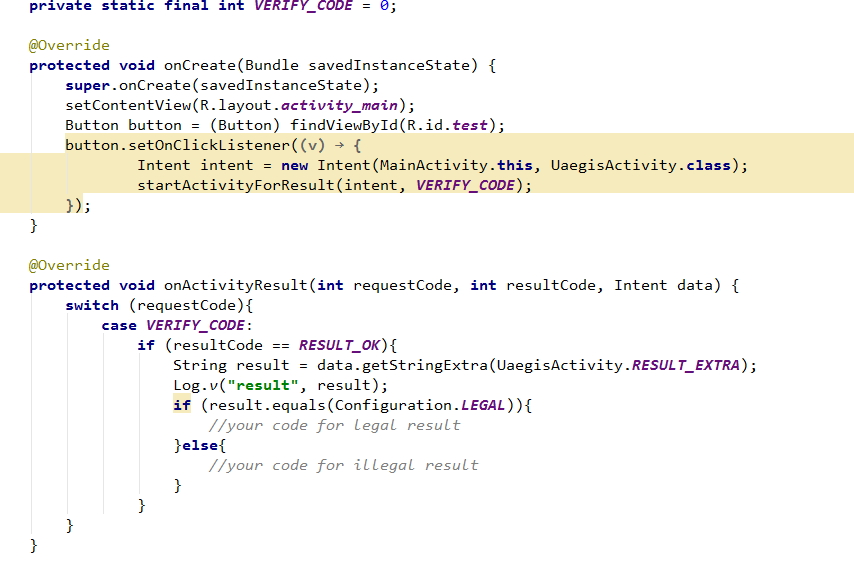

概述 Uaegis SDK
Uaegis SDK 是一套基于Android 4.0.3及以上版本设备的应用程序接口。您可以使用该套SDK开发适用于Android系统移动设备的数字证书验证，通过调用SDK接口，您可以轻松的验证用户所携带的移动U盾是否合法，从而保护用户的账号安全。
相关下载
链接：https://github.com/uaegis/LibUaegis/archive/master.zip
Hello Uaegis
开发工具
Android开发工具有很多。在此，我们推荐开发者使用Android Studio作为自己的开发工具，本套开发指南也是针对Android Studio开发环境下进行编写的。当然其他工具也可使用。
Android Studio工程配置方法
第一步：在工具栏中选择File—>New—>Import Module，选择导入的library Module，在本项目中是LibUaegis。如下图
第二步：把Library项目添加到源项目中，在工具栏中选择File—>Project Structure
选择您所创建的项目，然后选择右侧的Dependencies(依赖项)。
点击右侧的“+”添加按钮，在下拉菜单中找到Module Dependency（项目依赖），点击打开项目选择窗口。
原始项目的依赖项中就出现了导入的Libray项目，这时在项目中就能正确引用Library项目中的内容了，点击底部的OK按钮完成添加。
第三步：调用LibUaegis中的UaegisActivity
